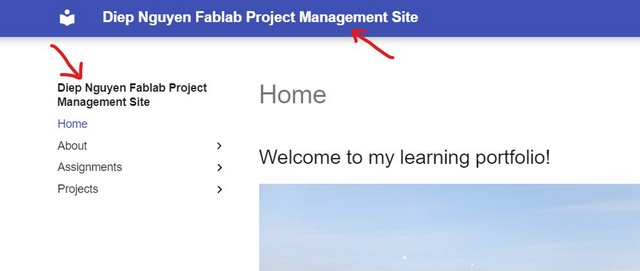
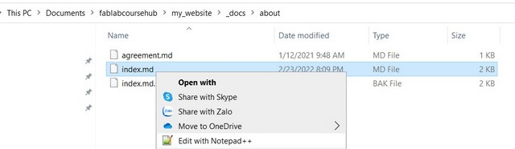

2. Project management¶
2nd day of week 1, I worked on configuring HTML, VCS (GITLAB, GITHUB) and started to get used to the documentation process. To be honest, I did not get familiar with the term “documentation”, because in my faculty, we usually use “learning journal” instead. Therefore, if you have similar feeling, you can think it simply as document or make diary of whatever you have learnt. Another thing is that, while studying the materials/ watching tutorials, I usually used screen-capture and pasted all the photos into my Onenote for later easy documentation.
HTML, CSS, JavaScript¶
Normally, a website includes 3 main parts: HTML (content and structure), CSS (style, e.g. colors, elements positions, and text sizes) and Javascript (provide interaction with the users)
1.HTML
The HyperText Markup Language, or HTML is the standard markup language for documents designed to be displayed in a web browser. It can be assisted by technologies such as Cascading Style Sheets (CSS) and scripting languages such as JavaScript.Wikipedia.
To create a basic website, all we need is a basic text editor (such as Notepad, or Notepad ++). Of course we can consider other applications including: Sublime text, Visual studio go, Brackets…
Once having a text editor installed in your laptop, we need to know about the Anatomy of HTML elements https://developer.mozilla.org/en-US/docs/Learn/HTML/Introduction_to_HTML/Getting_started (which look like syntax with heading and ending signal) and write what we want to show in our website.
I wrote my first website in the Notepad ++ and named it “index.html”

in website interface, it looks like this

2.CSS
Cascading Style Sheets (CSS) is a style sheet language used for describing the presentation of a document written in a markup language such as HTML.wikipedia.
To create style for what we wrote, we need to have another text document featuring the styles we want. For example, I want my header will be in red. I will write the rule like this to a new text document, and name it styles.css
h1 { color: red; }
To link the style to index.html, we need to write a rule inside the
of our index.html and it will show in website as below
and it will show in website as below

3.JavaScript would not be our focus in this course but it is about the interactions/behaviors for users such as a list down menu…
VCS (Version Control System) - Gitlab vs Github¶
VCS is a software which records changes, permits recall older versions, and enables collaboration. Among VCS softwares, we choose GIT due to its free, simple, fast, and open VCS platform. As learnt, there are 3 popular code hosting sites: GitHub, Bitbucket, GitLab. In this course, we focus more on GitHub and GitLab which are both web-based GIT repository hosting service with distributed revision control and social features.
Since the main aim of this week is to have my own website deployed in class repository (either gitlab or github), so we need to do following steps:
-
Create an account in gitlab or github and create a new project. This will be the place we host our website. In my case, I first chose GitLab to be my GIT repository manager.
-
Setup GIT in my computer (install GIT from https://git-scm.com/downloads, and configure git with my name and email address

-
Generate SSH keys: we need these keys to authenticate ourselves with the system so that it knows we are the one who owns the project.
-
We have 2 types of SSH keys: private key (which will store in our local file), and public key (which everyone can see and get)
-
To create SSH keys: I type the command ssh-keygen -t rsa -C “your.email@example.com” -b 4096 into the Git CMD

Then it will generate the 2 keys in my ssh configuration folder.

To pair up with the remote repo in gitlab, we need to open the file .pub in text document

and copy it into our gitlab project (go to Preferences > SSH Keys)
-
-
Download the remote repository to our computer (creating a local repository), we need to clone it by using git clone url
To get the URL, we need to go to our project created in gitlab, and copy it and paste to the command with git clone

After that, in our local repo, you will find a README text documentation, and that means we have successfully linked to the local repo from the remote repo. Now, we can add our index.html and styles.css to the local folder.

-
Update the remote repo: any changes or modification from the local repo need to be updated so as to see in the remote repo. In the GIT CMD
git status => to check the status of the remote repo.git add . => to append one or more files to the commit that is being created.git commit -m "message" => to store the commit in local repo.git push => to update and move the changes to remote repo. -
Host/Deploy my website in GitHub
I have been setting up using gitlab account, however, to facilitate the website deployment, we need to also set up CI/CD Pipelines which will help to automate our software delivery process. Unfortunately, gitlab will ask us to fill in our credit card information in order to use this function. It is a bit inconvenient for me to do so. Therefore, I will choose GitHub as my code hosting site instead, which mean I have to set up all the things from the beginning (step 1,3&4), and create my website using Markdowns (not HTML).
- Create a new folder in my computer (local repository) for the website, here I named it as fablabcoursehub
- Setup a new account and create a new repository (namedly my_website) in GitHub
- Generate SSH Keys in GitHub to authenticate myself with the system: in the my_website remote repo, go to Setting (at the top right corner of the web) > choose SSH and GPG Keys > New SSH Key
I type the title for the key as fablabprojectmanagementkey and copy the SSH key that I created above (3) to share it with GitHub and click SSH Key.

- Download the remote repo: in the newly created repository my_website, go to Code > choose SSH > copy the key URL > paste it in the command line with git clone
git clone + git@github.com:diepnguyenhoang/my_website.git
After the successful cloning, in my local repository fablabcoursehub, there is a folder named my_website
Building a website with Markdown - MKDOCS¶
The website I am going to build is a static web which is built with much simple codes/language, allow simple navigation … in comparison to dynamic web Wiki
As such, a static web generator is needed. In my case, I will use MkDocs, which is a fast, simple and downright gorgeous static site generator that’s geared towards building project documentation.
Documentation source files are written in Markdown, which is a lightweight markup language for creating formatted text using a plain-text editor.Wiki
-
First, since mkdocs requires Python (or pip), so I need to install the recent version of Python and then install mkdocs package using pip, following the detailed guidelines
-
Then, since building a website theme is quite challenging for me, I will make use of the existing website template/theme, downloaded from the Fabacademy_oulu, and copied the whole downloaded folder to my local repo (folder my_website).
-
The template folder I downloaded will contain these files (as picture shown below), but I will remove the 2 files which I don’t need for GitHub

-
Configure the site
In the template folder which I have just downloaded:
-
rename docs folder to _docs => anything we want to modify for our website in local repo will be excuted in this folder. In other words, this is the workspace for documenting
-
create new folder and name it: docs => do not touch this folder, this will store data generated from the remote repo. This is my Local repo which stores different version of my projects inside my computer. In contrast, remote repo will store different version of my projects in a remote server.
-
open the file named mkdocs.yml in notepad++. This is the config file, where I can customize my site information and also set the theme configuration option. For example:
Site name: Diep Nguyen Fablab Project Management Site. Site description: My Fabacademy site. Site Author: Diep Nguyen. Later it will show in the front-end as picture below
docs_dir: change from "docs" to "_docs"site_dir: change from "site" to "docs"theme name: material
-
-
Push the local repo to the remote repo using the guideline below. Make sure you are in the correct directory of the website in command line

After the git push, our remote repo should show the similar files as in our local repo.

-
At this stage, there will be one folder docs missing in the remote repo. Here, we need to go to the Setting in our github project, choose Pages. Select folder docs next to the Branch master and Save it.

Go to command line (not git cmd), tell the system to build docs file => type mkdocs build. This command is to tell the system that everything we work on the workspace folder (_docs) will need to move to the local repo (docs), so that later when we use git commands (add., commit, push) it will be updated in the remote repo also.

-
Update the remote repo with following commands
Git status

Git add .

Git commit

Git push
We will finally have linked the file docs from local repo to remote repo
-
Write/edit documentation site
When the technical part has been set up, I start to write my documentation/assignment. First of all, I may start edit my About page by opening the file index.md in the folder about with Notepad++

Since this is the first time I get started with Markdown, I used the Markdown cheatsheet to help me get familiar with this basic language. I also made use of Dillinger - a nice website to help me practice and try these syntax while I learn about it.
For example, if I want to add an image (which I have saved to the workspace folder “images” and named it “avatar”) to my document, I may use this syntax

or if I want to add a table, I would write:
| Syntax | Description |
| ----------- | ----------- |
| Header | Title |
| Paragraph | Text |
or if I need to include the link to my documentation, I will use this string
[title](https://www.example.com)
After I have finished writing my assignment, I need to update to the remote repo following the same commands:
mkdocs build > git status > git add . > git commit > git push
This is how it looks like when I was using markdown to write my assignment on Notepad++
Note:
For pictures to be uploaded, I used [FastStone Photo Resizer](http://www.faststone.org/FSResizerDetail.htm) to help me compress the images so that it will not be problematic for the website operation.